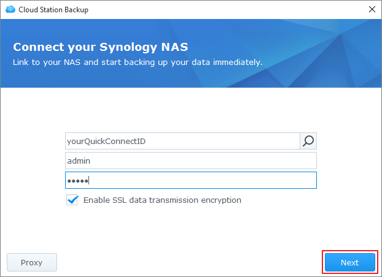

Přehled
Balíček Cloud Station Server není jen sofistikovaný meziplatformový synchronizační software: uživatelé ho mohou používat i jako chytřejší variantu pro zálohování svých osobních počítačů. Jako řešení zálohování v reálném čase funguje služba Cloud Station Backup okamžitě a šetří šířku pásma. Dále nabízí lepší ochranu díky až 32 historickým verzím jednoho souboru.
Nastavení balíčku Cloud Station Server na zařízení Synology NAS
- Přejděte k možnosti Centrum balíčků, vyhledejte položku Cloud Station Server a potom klikněte na možnost Instalovat.
- Spusťte službu Cloud Station Server.
- Přejděte k možnosti Přehled a v části Cloud Station Backup klikněte na položku Stáhnout. (Balíček Cloud Station Backup si můžete stáhnout také z webu Centrum pro stahování společnosti Synology.)
- Spusťte na počítači instalační program a postupujte podle pokynů pro instalaci balíčku Cloud Station Backup.
- Po instalaci na počítači balíček Cloud Station Backup spusťte. Klikněte na možnost Začít.
- Zadejte adresu zařízení Synology NAS se spuštěnou službou Cloud Station Server (nebo QuickConnect ID), uživatelské jméno a heslo. (Můžete také kliknout na ikonu vyhledávání vpravo a služba Cloud Station Backup automaticky v rámci vaší sítě LAN vyhledá ostatní zařízení Synology NAS.) Klikněte na možnost Další. 
- Vyberte zdroj zálohování a zrušte zaškrtnutí všech podsložek, které synchronizovat nechcete.
- Kliknutím na možnost Vybrat vyberte složku na zařízení Synology NAS. Služba Cloud Station Backup vytvoří na vybraném cíli zálohování zálohovací složku s názvem vašeho počítače.
- Na možnost Pravidla zálohování klikněte, pokud si přejete nastavit filtry či pravidla synchronizace.
- Kliknutím na možnost Další ověřte nastavení zálohování a poté klikněte na možnost Hotovo.
- Postup zálohování se zobrazuje v hlavní aplikaci.


Stažení nebo obnovení předchozí verze synchronizovaného souboru ze služby Cloud Station Server
- Přejděte k možnosti Cloud Station Server > Historie verzí a najděte soubor či složku, které chcete obnovit.
- Vyberte soubor, který chcete načíst, a klikněte na možnost Akce. Klikněte na možnost Procházet předchozí verze. Jestliže byl soubor z počítače omylem odstraněn nebo odebrán, můžete ho obnovit kliknutím na možnost Obnovit.
- Vyberte verzi souboru, který chcete stáhnout, a klikněte na možnost Stáhnout. Nebo pokud si jste jistí, že chcete vybranou verzi obnovit, klikněte na možnost Obnovit – aktuální verze se takto přepíše.


5. Další ochrana dat
Další způsoby, jak chránit a zálohovat data, najdete po kliknutí na tento odkaz, kde se nacházejí návody s podrobnostmi o dalších službách zálohování nabízených na systému DSM.